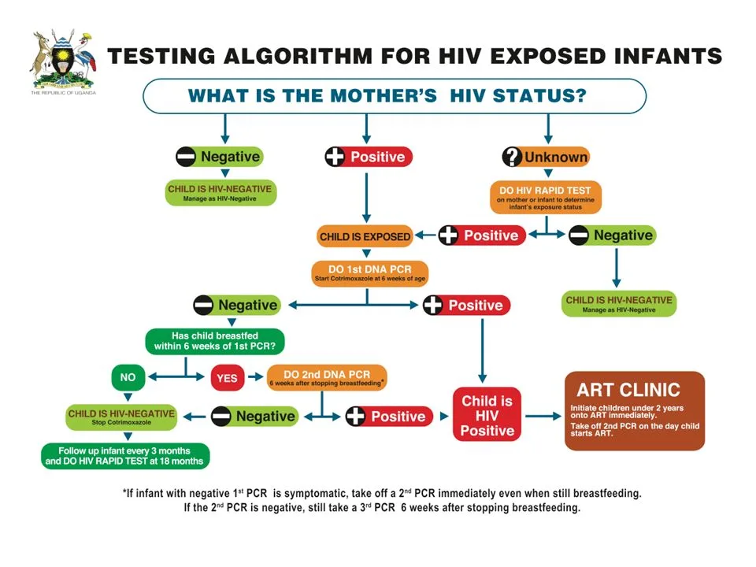
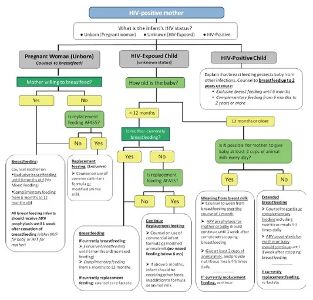

Expanded Nursing Uganda Explanation
Manage HIV/AIDS using IMCI approach should be reviewed through safe maternal and newborn assessment, early recognition of danger signs, respectful communication and timely referral. Connect the definition to vital signs, bleeding, fetal or newborn wellbeing, patient education and local protocol requirements.
Contents, 38 sections (tap to expand)
01 CHECK FOR HIV EXPOSURE AND INFECTION
All children found to have pneumonia , persistent diarrhea , ear discharge or very low weight for age (any of these features) and have no urgent need or indication for referral , should be assessed for symptomatic HIV infection .
- Children may acquire HIV infection from an infected mother through vertical transmission in utero, during delivery or while breastfeeding.
- Without any intervention, 30 – 40% babies born to infected mothers will themselves be infected.
- Most children born with HIV die before they reach their fifth birthday, with most not surviving beyond two years.
- Good treatment can make a big difference to children with HIV and their families.
- The child’s status may also be the first indicator that their parents are infected too.
02 ASSESS FOR HIV EXPOSURE AND INFECTION
- ASK LOOK, FEEL AND DIAGNOSE
- • Ask for mother’s HIV status to establish child’s HIV exposure* Is it: Positive, Negative or Unknown (to establish child’s HIV exposure) • Ask if child has had any TB Contact Child <18 months • If mother is HIV positive, conduct DNA PCR for the baby at 6 weeks or at first contact with the child • If the mother’s HIV status is unknown, conduct an antibody test (rapid test) on the mother to determine HIV exposure. PRESUMPTIVE SYMPTOMATIC DIAGNOSIS OF HIV INFECTION IN CHILDREN <18 MONTHS • Pneumonia * • Oral Candidiasis /thrush • Severe sepsis • Other AIDS defining conditions** Child ≥18 months • If the mother’s antibody test is POSITIVE, the child is exposed. Conduct an antibody test on the child. Child whose mother is NOT available: • Child < 18 months Do an antibody test on the child. If positive, do a DNA PCR test. • Child ≥ 18 months Do an antibody test to determine the HIV status of the child
03 CLASSIFY HIV STATUS
- SIGNS CLASSIFY AS TREATMENT
- • Child < 18 months and DNA PCR test POSITIVE • Child ≥ 18 months and Antibody test POSITIVE CONFIRMED HIV INFECTION • Initiate ART, counsel and follow up existing infections • Initiate or continue cotrimoxazole prophylaxis • Assess child’s feeding and provide appropriate counseling to the mother/caregiver • Offer routine follow up for growth, nutrition and development and HIV services • Educate caregivers on adherence and its importance • Screen for possible TB disease at every visit. • For those who do not have TB disease, start Isoniazid prophylactic therapy (IPT). Screen for possible TB throughout IPT • Immunize for measles at 6 months and 9 months and boost at 18 months • Follow up monthly as per the national ART guidelines and offer comprehensive management of HIV. Refer to appropriate national ART guidelines for comprehensive HIV care of the child.
- Child<18 months • If mother test is positive and child’s DNA PCR is negative OR • If mother is unavailable; child’s antibody test is positive and DNA PCR is negative HIV EXPOSED • Treat, counsel and follow up existing infections • Initiate or continue Cotrimoxazole prophylaxis • Give Zidovudine and Nevirapine prophylaxis as per the national PMTCT guidelines • Assess child’s feeding and provide appropriate counseling to the mother/caregiver • Offer routine follow up for growth, nutrition and development • Repeat DNA PCR test at 6 months. If negative, repeat DNA PCR test again at 12 months. If negative, repeat antibody test at 18 months • Continue with routine care for under 5 clinics • Screen for possible TB at every visit • Immunize for measles at 6 months and 9 months and boost at 18 months • Follow up monthly as per the national ART guidelines and offer comprehensive management of HIV. Refer to appropriate national ART guidelines for comprehensive care of the child.
- • No test results for child or mother • 2 or more of the following conditions: • Severe pneumonia • Oral candidiasis/thrush • Severe Sepsis OR • An AIDS defining condition SUSPECTED SYMPTOMATIC HIV INFECTION • Treat, counsel and follow-up existing infections • Give cotrimoxazole prophylaxis • Give vitamin A supplements from 6 months of age every 6 months • Assess the child’s feeding and provide appropriate counseling to the mother • Test to confirm HIV infection • Refer for further assessment including HIV care/ ART • Follow-up in 14 days, then monthly for 3 months and then every 3 months or as per immunization schedule
- Mother’s HIV status is NEGATIVE OR Mother’s HIV status is POSITIVE and child is ≥ 18 months with antibody test NEGATIVE 6 weeks after completion of breastfeeding HIV NEGATIVE • Manage presenting conditions according to IMNCI and other recommended national guidelines • Advise the mother about feeding and about her own health
04 THEN CHECK FOR TB
- ASK LOOK AND FEEL
- For symptoms suggestive of TB Has the child been coughing for 14 days or more? Has the child had persistent fever for 14 days or more? Has the child had poor weight gain in the last one month?* History of contact Has the child had contact with a person with Pulmonary Tuberculosis or chronic cough? Look or feel for physical signs of TB Swellings in the neck or armpit Swelling on the back Stiff neck Persistent wheeze not responding to brochodilaters. Collect sample for GeneXpert or smear microscopy If available, send the child for laboratory tests (GeneXpert or smear microscopy) and/ or Chest X-Ray.
05 CLASSIFY
- SIGNS CLASSIFY AS TREATMENT
- Two or more of the following in HIV Negative child AND one or more of the following in HIV Positive child: At least two symptoms suggestive of TB Positive history of contact with a TB case Any physical signs suggestive of TB OR A positive GeneXpert or smear microscopy test TB • Initiate TB treatment • Treat, counsel, and follow up any co- infections • Ask about the caregiver’s health and treat as necessary • Link the child to the nearest TB clinic for further assessment and ongoing follow-up • If GeneXpert or smear microscopy test is not available or negative, refer for further assessment
- Positive history of contact with a TB case and NO other TB symptoms or signs listed above TB EXPOSURE • Start Isoniazid at 10mg/kg for 6 months • Treat, counsel, and follow up existing infections • Ask about the caregiver’s health and treat as necessary • Link child to the nearest TB clinic
- NO TB symptoms or signs NO TB • Treat, counsel, and follow up existing infections • Start Isoniazid in HIV positive child above 1 year at 10mg/kg for 6 months
06 THEN CHECK THE CHILD‘S IMMUNIZATION AND VITAMIN A STATUS
Immunization Schedule
- Follow National Guidelines as per the Child Health Card/Mother Baby Passport.
- Age Vaccine
- Birth BCG*
- OPV-0
- 6 weeks DPT+HepB+HIB
- OPV-1
- RTV1
- PCV1
- 10 weeks DPT+HepB+HIB
- OPV-2
- RTV2
- PCV2
- 14 weeks DPT+HepB+HIB
- OPV-3
- IPV
- RTV3
- PCV3
- 9 months Measles
- BCG: Bacillus Calmette-Guérin (given at birth) OPV: Oral Polio Vaccine DPT: Diphtheria, Pertussis, Tetanus HepB: Hepatitis B HIB: Haemophilus influenzae type b RTV: Rotavirus Vaccine PCV: Pneumococcal Conjugate Vaccine IPV: Inactivated Polio Vaccine VITAMIN A SUPPLEMENTATION Give every child a dose of Vitamin A every six months from the age of 6 months. Record the dose on the child’s chart. ROUTINE DEWORMING TREATMENT Give every child mebendazole every six months from the age of 1 year. Record the dose on the child’s chart.
07 Manage HIV/AIDS using IMCI approach
- All children less than 5 years who are HIV infected should be initiated on ART irrespective of CD4 count or clinical stage.
- Remember that if a child has any general danger sign or a severe classification, he or she needs URGENT REFERRAL. ART initiation is not urgent, and the child should be stabilized first.
08 Steps when Initiating ART in Children
Child is under 18 months:
- HIV infection is confirmed if virological test (PCR) is positive.
Child is over 18 months:
- Two different serological tests are positive.
- Send any further confirmatory tests required.
If results are discordant, refer
If HIV infection is confirmed, and child is in stable condition , GO TO STEP 2
****
Check that the caregiver is willing and able to give ART. The caregiver should ideally have disclosed the child’s HIV Status to another adult who can assist with providing ART, or be part of a support group.
- Caregiver able to give ART: GO TO STEP 3
- Caregiver not able: classify as CONFIRMED HIV INFECTION
but NOT ON ART. Counsel and support the caregiver. Follow-up regularly. Move to STEP 3 once the caregiver is willing and able to give ART.
****
- If a child is less than 3 kg or has TB, Refer for ART initiation.
- If child weighs 3 kg or more and does not have TB, GO TO STEP 4 ****
Record the following information:
- Weight and height
- Pallor if present
- Feeding problem if present
- Laboratory results (if available): Hb, viral load, CD4 count and percentage. Send for any laboratory tests that are required. Do not wait for results. GO TO STEP 5 ****
- Initiate ART treatment:
- Child up to 3 years : ABC or AZT +3TC+ LPV/R or recommended first-line regimen
- Child 3 years or older : ABC + 3TC + DTG , or recommended first-line regimen.
- Give co-trimoxazole prophylaxis
- Give other routine treatments, including Vitamin A and immunizations
- Follow-up regularly as per national guidelines.
09 Management of HIV in Children Using IMNCI Approach
Overview: The IMNCI guidelines provide a structured approach to managing HIV in children through systematic assessment, classification, treatment, and counseling. This follows the standard IMNCI process flow: Assess → Classify → Treat → Counsel → Follow-up .
10 STEP 1: ASSESSMENT (Ask and Test)
Refer to: Page 9 (Child 2 months–5 years) and Page 37 (Young Infant 0–2 months)
Before managing HIV, you must determine the status for every child not already enrolled in HIV care.
11 Ask the Mother:
- Has the mother had an HIV test? If yes, is it Positive or Negative?
- Has the child had an HIV test? If yes, was it a DNA PCR (for infants) or Rapid test (for older children), and was it Positive or Negative?
12 Assess Breastfeeding Risk:
- Is the child breastfeeding now?
- Was the child breastfeeding at the time of the test or 6 weeks before?
13 If Status is Unknown:
- Perform an HIV test for the mother
- If the mother is positive, test the child
14 If Mother is Positive:
- Check if the mother is on ART (Antiretroviral Therapy)
- Check if the child is on ARV prophylaxis (e.g., Nevirapine)
15 STEP 2: CLASSIFICATION
Based on assessment, the child is classified into one of three categories. The management depends entirely on this classification.
- Classification Criteria Color Code Management Level
- CONFIRMED HIV INFECTION Positive DNA PCR in any child <18 months Positive Rapid test in child ≥18 months PINK - URGENT Immediate treatment & ART linkage
- HIV EXPOSED Mother HIV positive AND child negative test but still breastfeeding (or stopped <6 weeks) Mother HIV positive AND child not yet tested Infant <18 months with positive rapid test (needs PCR confirmation) YELLOW - CLINIC Prophylaxis & frequent monitoring
- HIV INFECTION UNLIKELY Negative HIV test in mother or child No ongoing breastfeeding risk GREEN - HOME Routine care & prevention counseling
16 A. Management of CONFIRMED HIV INFECTION (Red Row)
- Give Cotrimoxazole Prophylaxis: Start immediately for all confirmed HIV-infected children
- Prevents Pneumocystis jirovecii pneumonia (PCP) and other infections
- Age/Weight Formulation Dose
- < 6 months 5 ml syrup (40/200 mg per 5ml) 2.5 ml once daily
- 6 months – 5 years 5 ml syrup OR ½ adult tablet (80/400 mg) 5 ml or ½ tablet once daily
- Assess for Tuberculosis (TB) - Page 10: Check for cough >14 days, fever >14 days, or poor weight gain
- Check for TB contact history
- Look for physical signs: lymph node swelling, stiff neck
- Isoniazid Preventive Therapy (IPT): If child is HIV Positive, >1 year old, and has NO signs of TB
- Start Isoniazid 10 mg/kg daily for 6 months
- Prevents active TB disease
- Linkage to Care: Refer child to ART Clinic or Early Infant Diagnosis (EID) point
- IMCI focuses on identification and linkage, not starting full ART in OPD
- Ensure follow-up appointment within 1 week
- Immunization - Page 11: Do NOT give BCG vaccine if child has symptoms of HIV (clinical AIDS)
- Risk of disseminated BCG disease
- Give all other vaccines as per schedule
- Treat Current Illnesses Aggressively: HIV-positive children are "High Risk"
- If they have Pneumonia with chest indrawing, give first dose of antibiotics and refer urgently
- If diarrhea, use ORS more liberally
- If fever, investigate thoroughly for opportunistic infections
17 B. Management of HIV EXPOSED (Yellow Row)
- Cotrimoxazole Prophylaxis: Start from 6 weeks of age
- Continue until HIV infection is definitively ruled out
- Usually continued until 6 weeks after complete cessation of breastfeeding
- Testing (Diagnosis): Do DNA PCR test immediately if not done
- If first PCR negative but child is breastfeeding, repeat test 6 weeks after breastfeeding stops
- Do not rely on rapid test until child is ≥18 months
- ARV Prophylaxis: Ensure child is taking Nevirapine (NVP) syrup if indicated by national guidelines
- Check adherence daily
- Link to "Mother-Baby Care Point" for follow-up
- Feeding Support: Support mother to practice exclusive breastfeeding correctly
- Counsel on safe replacement feeding only if AFASS criteria met
- Monitor child's weight and growth monthly
18 C. Management of HIV INFECTION UNLIKELY (Green Row)
- Treat any existing infections (cough, diarrhea, etc.) using standard IMCI protocols
- Counsel mother on her own health and preventing future infection
- Encourage HIV testing if status changes or risk occurs
- Continue routine immunizations
19 Feeding Advice (Page 26, 29)
Correct feeding is critical to reduce HIV transmission and ensure child survival.
- Exclusive Breastfeeding (First 6 months): Mothers with HIV should exclusively breastfeed for the first 6 months
- Mixed feeding (breastmilk + other foods/fluids) is DANGEROUS as it damages gut lining and increases HIV transmission risk
- Exclusive breastfeeding provides antibodies and reduces infections
- Continued Breastfeeding (6-12 months): Encourage continued breastfeeding up to 12 months
- Breastfeeding should only stop when a nutritionally adequate and safe diet can be provided
- Gradually introduce complementary foods from 6 months while continuing breastfeeding
- Replacement Feeding ("AFASS" Criteria - Page 29): Advise stopping breastfeeding ONLY if ALL these criteria are met: AFASS Requirements A cceptable Socially and culturally acceptable to mother and family F easible Mother has time, knowledge, skills, and support to prepare formula 8-12 times daily A ffordable Mother/family can afford continuous formula supply for 1 year without harming family nutrition S ustainable Continuous supply of formula and clean water is assured S afe Clean water, hygienic preparation, and feeding with cup (not bottle) can be ensured
- Mouth Conditions: Check for oral thrush or sores in the child (Page 19, 39)
- Treat immediately with Nystatin 1 ml four times daily for 7 days
- Sores increase HIV transmission risk during breastfeeding
- Check mother's breasts for thrush and treat if present
20 General Care & Hygiene (Page 29)
- Hygiene: Teach mother to wash hands before food preparation to prevent diarrhea (HIV children are very susceptible)
- Growth Monitoring: Weigh child at every visit. Poor weight gain is a major sign of HIV progression or treatment failure
- Mother's Health (Page 30): Counsel mother on her own nutrition and ART adherence
- Ensure she is on ART to suppress viral load (reduces transmission to baby)
- Check if she needs family planning or STI screening
- Provide psychosocial support and link to support groups
21 STEP 5: FOLLOW-UP
- Exposed Children: Follow up monthly to monitor growth and ensure prophylactic medication (Cotrimoxazole/Nevirapine) adherence
- Confirmed Children: Follow up at ART clinic as per schedule (every 2 weeks initially, then monthly)
- Acute Illness: If HIV-positive child has cough or cold, follow up in 5 days rather than waiting, as they deteriorate faster
- Growth Monitoring: Plot weight on growth chart at every visit; flattening curve indicates treatment failure
22 STEP 1: DECIDE IF THE CHILD HAS CONFIRMED HIV INFECTION
- Child is under 18 months: HIV infection is confirmed if virological test (PCR) is positive
- Child is over 18 months: Two different serological tests are positive
- Send any further confirmatory tests required
- If results are discordant, refer to specialist
- If HIV infection is confirmed, and child is in stable condition, GO TO STEP 2
23 STEP 2: DECIDE IF CAREGIVER IS ABLE TO GIVE ART
Check that the caregiver is willing and able to give ART. The caregiver should ideally have:
- Disclosed the child's HIV Status to another adult who can assist
- Be part of a support group
Caregiver able to give ART: GO TO STEP 3
Caregiver not able: Classify as CONFIRMED HIV INFECTION but NOT ON ART. Counsel and support the caregiver. Follow-up regularly. Move to STEP 3 once the caregiver is willing and able to give ART.
24 STEP 3: DECIDE IF ART CAN BE INITIATED IN YOUR FACILITY
- If child is less than 3 kg or has TB: Refer for ART initiation
- If child weighs 3 kg or more and does not have TB: GO TO STEP 4
25 STEP 4: RECORD BASELINE INFORMATION ON THE CHILD’S HIV TREATMENT CARD
Record the following information:
- Weight and height
- Pallor if present
- Feeding problem if present
- Laboratory results (if available): Hb, viral load, CD4 count and percentage
- Send for any laboratory tests that are required. Do not wait for results. GO TO STEP 5
26 STEP 5: START ON ART, COTRIMOXAZOLE PROPHYLAXIS AND ROUTINE TREATMENTS
- Initiate ART treatment: Child up to 3 years: ABC or AZT + 3TC + LPV/r or recommended first-line regimen
- Child 3 years or older: ABC + 3TC + DTG, or recommended first-line regimen
- Give co-trimoxazole prophylaxis (as per dosing table above)
- Give other routine treatments: Vitamin A, immunizations, deworming
- Follow-up regularly as per national guidelines
- Never delay treatment while waiting for laboratory results
- Always check for TB before starting ART
- Ensure caregiver readiness and support before initiating ART
- Monitor growth and development closely in all HIV-exposed and infected children
- Maintain confidentiality while providing family-centered care
27 Recommended First-Line ARV Regimens
- Patient Category Indication ARV Regimen
- Adults and Adolescents (aged 10 and above) Initiating ART TDF+3TC+DTG
- Alternative Regimens
- TDF+3TC+DTG (Contraindications for EFV)
- ABC+3TC+DTG (Contraindications for TDF)
- Pregnant or Breastfeeding Women Initiating ART TDF+3TC+DTG
- Alternative Regimen
- ABC+3TC+ATV/r (Contraindications for TDF or EFV)
- Children (3 to <10 years) Initiating ART ABC+3TC+DTG
- Alternative Regimen
- ABC+3TC+NVP (Contraindications for EFV)
- Children Under 3 Years Initiating ART ABC+3TC+LPV/r
- Alternative Regimen
- AZT+3TC+LPV/r (Hypersensitivity reaction to ABC)
28 Second- and Third-Line ART Regimens
- Population Patients Failing First-Line Regimens Second-Line Regimens Third-Line Regimens
- Adults, Pregnant and Breastfeeding Women, Adolescents TDF + 3TC + DTG AZT+3TC+ATV/r (recommended) or AZT+3TC+LPV/r (alternative) All 3rd line regimens guided by resistance testing
- If not exposed to INSTIs: DRV/r + DTG ± 1-2 NRTIs
- If exposed to INSTIs: DRV/r + ETV±1-2 NRTIs
- TDF + 3TC + DTG
- ABC+ 3TC+ DTG
- ABC+ 3TC+ EFV
- ABC/3TC/NVP
- TDF/3TC/NVP
- AZT/3TC/NVP
- TDF+3TC+ATV/r (recommended) or TDF+3TC+LPV/r AZT/3TC/EFV
- Children (3–<10 years) ABC + 3TC + DTG AZT+3TC+LPV/r For children above 6 years, and prior exposure to INSTIs, DRV/r±1-2 NRTIs
- ABC+ 3TC + NVP
- AZT+3TC+NVP
- ABC+3TC+LPV/r
- For children below 6 years, AZT/3TC/EFV
- DRV/r+ RAL+ 2 NRTIs
- AZT+3TC+LPV/r
- Children Under 3 Years ABC+3TC+LPV/r pellets AZT+3TC+RAL Optimize regimen using genotype profile
- AZT+3TC+LPV/r pellets
- ABC+3TC+RAL
- AZT+3TC+NVP
- ABC+3TC+LPV/r
- Lower toxicity
- Better palatability and lower pill burden
- Increased durability and efficacy
- Sequencing to spare other formulations for the 2nd line regimen
- Harmonization across age and population
- Lower cost
- Facilitate achieving a recommended regimen for the majority of PLHIV
- TDF+3TC+DTG: EFV contraindications
- ABC+3TC+DTG: TDF contraindications
- ABC+3TC+ATV/r: Contraindications for TDF or EFV
- ABC+3TC+NVP: EFV contraindications in children (3 to <10 years)
- AZT+3TC+LPV/r: Hypersensitivity reaction to ABC (rare)
- Dolutegravir (DTG) benefits: low potential for drug interactions, shorter time to viral suppression, higher resistance barrier, long half-life, and low cost.
- ABC+3TC+EFV once-a-day dose for improved adherence.
- LPV/r-based regimen for children under 3 years due to reduced risks and high resistance barrier.
- ABC: Abacavir AZT: Zidovudine 3TC: Lamivudine LPV/r: Lopinavir/Ritonavir RTV: Ritonavir NVP: Nevirapine EFV: Efavirenz DTG: Dolutegravir TDF: Tenofovir Disoproxil Fumarate RAL: Raltegravir ATV/r: Atazanavir/Ritonavir
29 TB/HIV Co-Infection Treatment Based on Age/Weight
- AGE/WEIGHT FIRST LINE TB/HIV CO-INFECTION
- < 2 Weeks Start TB treatment immediately, start ART (Usually after 2 weeks of age) once tolerating TB drugs
- > 2 Weeks and <35 kgs ABC/3TC/LPVr/RTV If not able to tolerate super boosted LPVr/RTV then use ABC/3TC + RAL for duration of TB treatment. After completion of TB treatment revert back to the recommended 1st line regimen ABC/3TC +LPVr. If on ABC/3TC/DTG regimen – continue If on NVP based regimen, change to EFV.
- >35 kgs body weight and < 15 years age ABC/3TC/DTG continue with the regimen AND double the dose for DTG If on PI based regimen switch the patients to DTG, hence doubling the dose
30 DOSAGE OF COTRIMOXAZOLE PROPHYLAXIS
- WEIGHT (KG) SUSPENSION 240MG PER 5ML SINGLE STRENGTH TABLET 480MG (SS) DOUBLE STRENGTH TABLET 960MG (DS)
- 1-4 2.5ml 1/4 SS tab –
- 5-8 5ml 1/2 SS tab 1/4 DS tab
- 9-16 10ml 1 SS tab 1/2 DS tab
- 17-30 15ml 2 SS tab 1 DS
- >30 (Adults and adolescents) – 2 SS 1 DS
Dose by body weight is 24-30 mg/kg once daily of the trimethoprim-sulphamethaxazole – combination drug.
• Oral thrush management– use miconazole gel
• Cotrimoxazole use is still recommended
• Most infants and children initiated on treatment take time before immune recovery occurs
• Children on LPV/r – continue with boosted ritonavir
• RAL – for those unable to tolerate super boosted LPV/r
****
31 Paediatric ARVs Dosages
- WEIGHT RANGE (KG) ABACAVIR + LAMIVUDINE 120 mg ABC + 60 mg 3TC ZIDOVUDINE + LAMIVUDINE 60 mg ZDV + 30 mg 3TC EFAVIRENCE (EFV) Once Daily 200mg tabs LAMIVUDINE + ZIDOVUDINE Twice Daily 200mg tabs
- 3 – 5.9 0.5 tab 1 tab –
- 6 – 9.9 1 tab 1.5 tabs –
- 10 – 13.9 1 tab 2 tabs 1 tab 1.5 tabs
- 14 – 19.9 1.5 tabs 2.5 tabs 1.5 tabs + 1 tab in AM & 0.5 tab in PM
- 20 – 24.9 2 tabs 3 tabs 1.5 tabs 1 tab in AM & 0.5 tab in PM
- 25 – 34.9 300 mg ABC + 150 mg 3TC 300 mg ZDV + 150 mg 3TC 2 tabs 1 tab in AM & 0.5 tab in PM
32 Manage Side Effects of ARV Drugs
- SIGNS or SYMPTOMS APPROPRIATE CARE RESPONSE
- Yellow eyes (jaundice) or abdominal pain Stop drugs and REFER URGENTLY
- Rash If on abacavir, assess carefully. Call for advice. If severe, generalized, or associated with fever or vomiting: stop drugs and REFER URGENTLY
- Nausea Advise drug administration with food. If it persists for more than 2 weeks or worsens, call for advice or refer.
- Vomiting If medication is seen in vomitus, repeat the dose. If vomiting persists, bring the child to the clinic. REFER URGENTLY if vomiting everything or associated with severe symptoms.
- Diarrhoea Assess, classify, and treat using diarrhoea charts. Reassure that it may improve in a few weeks. Follow up as per chart booklet. Call for advice or refer if not improved after two weeks.
- Fever Assess, classify, and treat using fever chart.
- Headache Give paracetamol. If on efavirenz, reassure that it is common and usually self-limiting. Call for advice or refer if it persists for more than 2 weeks or worsens.
- Sleep disturbances, nightmares, anxiety Due to efavirenz . Administer at night on an empty stomach with low-fat foods. Call for advice or refer if it persists for more than 2 weeks or worsens.
- Tingling, numb, or painful feet or legs If new or worse on treatment, call for advice or refer.
- Changes in fat distribution Consider switching from stavudine to abacavir, consider viral load. Refer if needed.
33 GIVE FOLLOW – UP CARE FOR ACUTE CONDITIONS
- Care for the child who returns for follow-up using all the boxes that match the child’s previous classifications.
- If the child has any new problem, assess, classify fully and treat as on the ASSESS AND CLASSIFY chart.
- PNEUMONIA After 2 days Check the child for general danger signs. Assess the child for cough or difficult breathing. Ask : Is the child breathing slower? Is there less fever? Is the child eating better? Treatment : If any general danger sign , administer a dose of second-line antibiotic, then admit or refer URGENTLY to the hospital. If chest indrawing, breathing rate, fever , and eating have not improved , switch to the second-line antibiotic and ADMIT or REFER (If this child had measles within the last 3 months or is known or confirmed HIV infection, refer). If breathing slower, less fever, or eating better, complete the 5 days of antibiotic.
- WHEEZING After 2 days Check the child for general danger signs or chest indrawing. Assess the child for cough or difficult breathing . Ask: Is the child breathing slower? Is the child still wheezing? Is the child eating better? For Children under 1 year: If wheezing and any of the following; General danger sign or stridor in a calm child or chest indrawing, fast breathing, poor feeding; Give intravascular/intramuscular antibiotic. Then admit or refer URGENTLY to the hospital. If no wheezing, breathing slower, and eating better; continue the treatment for 5 days. For Children over 1 year: If wheezing and any of the following; General danger sign or stridor in a calm child or chest indrawing, fast breathing, poor feeding; Give intravascular/intramuscular antibiotic. Then admit or refer URGENTLY to the hospital. If breathing rate and eating have not improved; change to second-line antibiotic and ADMIT OR REFER urgently to the hospital. If still wheezing; continue oral bronchodilator. If breathing slower, no wheezing, and eating better, continue the treatment for 5 days. If the child has unilateral wheeze and is not responding to bronchodilators, TB disease is likely and should be evaluated.
- PERSISTENT DIARRHOEA After 5 days Ask: Has the diarrhea stopped? How many loose stools is the child having per day? Treatment: If the diarrhea has not stopped (child is still having 3 or more loose stools per day) , do a full reassessment of the child. Give any treatment needed. Then refer to the hospital. If the diarrhea has stopped (child having fewer than 3 loose stools per day), tell the mother to follow the usual feeding recommendations for the child’s age, but give one extra meal every day for 1 month. Ask her to continue giving Zinc sulfate for a total of 10 days. NB: Attention to diet is an essential part of the management of a child with persistent diarrhea
- DYSENTERY After 2 days Assess the child for diarrhea. > See ASSESS & CLASSIFY chart Ask: Are there fewer stools? Is there less blood in the stool? Is there less fever? Is there less abdominal pain? Is the child eating better? Treatment: If the child is dehydrated, treat dehydration according to classification. If the number of stools, the amount of blood in stools, fever, abdominal pain, or eating is worse : Admit or Refer to the hospital. If the condition is the same: add Metronidazole to the treatment. Give it for 5 days. Advise the mother to continue ciprofloxacin and zinc and to return in 2 days. Exceptions – if the child: is less than 12 months old, or was dehydrated on the first visit or to the hospital. had measles within the last 3 months , then Admit or Refer URGENTLY If fewer stools, less blood in the stools, less fever, less abdominal pain, and eating better , continue giving Ciprofloxacin and zinc sulfate until finished.
- UNCOMPLICATED MALARIA If fever persists after 3 days, or recurs within 14 days: Do a full reassessment of the child. >See ASSESS & CLASSIFY chart. Assess for other causes of fever. Treatment: If the child has any general danger sign or stiff neck , treat it as VERY SEVERE FEBRILE DISEASE. If the child has any cause of fever other than malaria, provide treatment. If malaria is the only apparent cause of fever and confirmed by microscopy: Give oral DIHYDROARTEMISININ-PIPERAQUINE (DHA-PPQ). Give paracetamol. If the child is under 5 kg and was given DHA-PPQ assess further. Advice mother to return again in 3 days if the fever persists – If fever has been present every day for 7 days, refer for assessment.
- FEVER – NO MALARIA If fever persists after 3 days: Do a full reassessment of the child. > See ASSESS & CLASSIFY chart (see pg 6) Assess for other causes of fever. Treatment: If the child has any general danger sign or stiff neck , treat as VERY SEVERE FEBRILE DISEASE. If the child has any cause of fever other than malaria , provide appropriate treatment. If malaria is the only apparent cause of fever : Treat with the first-line oral antimalarial. Give paracetamol. Advise the mother to return again in 3 days if the fever persists. If fever has been present every day for 7 days, refer for assessment. If the child has persistent fever, cough, and reduced playfulness despite other treatment, evaluate for TB.
- EYE OR MOUTH COMPLICATIONS OF MEASLES After 2 days: Look for red eyes and pus draining from the eyes. Look at mouth ulcers. Smell the mouth. Treatment for Eye Infection: If pus is draining from the eye , ask the mother/caregiver to describe how she has treated the eye infection. If treatment has been correct, refer to the hospital. If treatment has not been correct, teach mother/caregiver correct treatment. If the pus is gone but redness remains , continue the treatment. If there is no pus or redness, stop the treatment. Treatment for Mouth Ulcers: If mouth ulcers are worse, or there is a very foul smell from the mouth, refer to the hospital. If mouth ulcers are the same or better, continue using half-strength gentian violet or Nystatin for a total of 5 days. Treatment for thrush: If thrush is worse, check that treatment is being given correctly. If the child has problems with swallowing, refer to the hospital. If thrush is the same or better, and the child is feeding well, continue Nystatin for a total of 7 days. If thrush is no better or is worse consider symptomatic HIV infection.
- EAR INFECTION After 5 days: Reassess for ear problem. > See ASSESS & CLASSIFY chart Measure the child’s temperature. Treatment: If there is tender swelling behind the ear or high fever (38.5°C or above), admit or refer URGENTLY to the hospital. Acute ear infection : if ear pain continues or discharge persists, treat with 5 more days of the same antibiotic. Continue wicking to dry the ear. Follow-up in 5 days. Chronic ear infection : Check that the mother is wicking the ear correctly. Encourage her to continue. Review in 2 weeks. If ear discharge continues for more than 2 months: Admit or refer to the hospital. If no ear pain or discharge , praise the mother for her careful treatment. If she has not yet finished the 5 days of antibiotic, tell her to use till treatment is completed.
- FEEDING PROBLEM After 5 days: Reassess feeding. See questions at the top of the COUNSEL THE MOTHER. Ask about any feeding problems found on the initial visit. Counsel the mother/caregiver about any new or continuing feeding problems. If you counsel the mother/caregiver to make significant changes in feeding, ask her to bring the child back again after 5 days. If the child is very low weight for age, ask the mother to return 14 days after the initial visit to measure the child’s weight gain.
- PALLOR After 14 days: Give iron and folate. Advise mother to return in 14 days for more iron and folate. Continue giving iron and folate every day for 2 months. If the child has palmar pallor after 2 months, refer for assessment.
- MALNUTRITION After 14 days: If the child is gaining weight, encourage the mother to continue with feeding. Counsel the mother about any feeding problem. SEVERE MALNUTRITION WITHOUT COMPLICATIONS After 7 days or during regular follow-up: Do a full assessment of the child >See ASSESS AND CLASSIFY chart. Assess child with the same measurements (WFH/L, MUAC) as on the initial visit. Check for edema of both feet. Check the child’s appetite by offering ready-to-use therapeutic food if the child is 6 months and older. Treatment : If the child has SEVERE MALNUTRITION WITH COMPLICATIONS (WFH/L less than -3 z-scores or MUAC is less than 11.5mm or edema of both feet AND has developed a medical complication or edema, or fails the appetite test), refer URGENTLY to the hospital. If the child has SEVERE MALNUTRITION WITHOUT COMPLICATIONS (WFH/L less than -3 z-scores or MUAC is less than 11.5 mm or edema of both feet but NO medical complication and passes the appetite test) counsel the mother and encourage her to continue with appropriate RUTF feeding. Ask the mother to return in 7 days. If the child has MODERATE ACUTE MALNUTRITION (WFH/L between -3 and -2 z-scores or MUAC between 11.5 and 12.5 mm), advise the mother to continue RUTF. Counsel the mother. MODERATE ACUTE MALNUTRITION After 14 days: Assess the child using the same measurement (WFH/L or MUAC) used on the initial visit. If WFH/L, weigh the child, measure height or length and determine if WFH/L. If MUAC, measure using MUAC tape. Check the child for edema of both feet. Reassess feeding. See questions in the COUNSEL THE MOTHER chart. Treatment : If the child is no longer classified as MODERATE ACUTE MALNUTRITION, praise the mother and encourage her to continue. If the child is still classified as MODERATE ACUTE MALNUTRITION, counsel the mother about any feeding problem found. Ask the mother to return again in 14 days. Continue to see the child every 2 weeks until the child is feeding well and gaining weight regularly or his or her WFH/L is -2 z-scores or more or MUAC is 12.5 or more. Assess all children with failure to thrive or growth faltering for possible TB disease. Exception: If you do not think that feeding will improve, or if the child has lost weight or his or her MUAC has diminished, refer the child.
- HIV EXPOSED & INFECTED CHILDREN HIV INFECTED CHILD After 1 month: Assess the child’s general condition. Do a full assessment Treat the child for any condition found. Ask for any feeding problems, counsel the mother about any new or continuing feeding problems. Advise the mother/caregiver to bring the child back if any new illness develops or she is worried. Counsel the mother/caregiver on any other problems and ensure community support is being given. Refer for further psychosocial/counseling if necessary. Continue with routine follow-up for growth and development, nutrition, immunization, vitamin A, deworming. Assess adherence to ART and Cotrimoxazole and advise accordingly. Offer or refer child for comprehensive HIV management and care (including ART) as per the national ART guidelines. Plan for defaulter tracking system; identification and tracking of children. Follow up monthly. HIV EXPOSED CHILD (<18 months) : For children tested DNA PCR Negative After 1 month: Assess the child’s general condition. Do a full reassessment. Ask for any feeding problems or poor appetite, counsel the mother about any new or continuing feeding problems. Treat the child for any condition found. Give Cotrimoxazole prophylaxis from 6 weeks and emphasize the importance of compliance. Start or continue with ARV prophylaxis for a total of 12 weeks. Screen for possible TB Disease. Continue with routine follow-up for growth and development, nutrition, immunization, vitamin A, deworming. Follow-up schedule of HIV Exposed infant monthly up to 24 months. Refer to Early Infant Diagnosis (EID) algorithm for confirmation of HIV status. Refer to the HIV exposed infant follow-up card and register for further follow-up instructions.
34 Feeding Counseling
For Mothers and caregivers of infants under 18 months.
Goals:
- Discuss ongoing HIV risk from breastfeeding and the implications on test results.
- Support the mother as she makes choices about feeding for the infant.
- Ensure that the mother understands the testing procedure for infants under 18 months.
- If positive, discuss the need to start ART immediately.
Just after giving birth, the mother should be counseled on:
- HIV testing for herself: if she did not test in antenatal, she should be tested soon after delivery.
- Infant feeding practices.
- HIV testing for the infant: at 6 weeks, the infant can be tested.
Overview of Infant Feeding Guidelines for Exposed Infants
- HIV+ mothers should exclusively breastfeed infants for the first 6 months.
- Complementary feeds should be introduced from 6 months.
- Continue to breastfeed for 12 months.
- During breastfeeding, the infant should receive daily NVP until 1 week after stopping breastfeeding.
- Breastfeeding should only stop once a nutritionally adequate and safe diet without breast milk can be provided.
- When an infected mother decides to stop breastfeeding at any time, they should do so over the course of 1 month.
35 Nursing Uganda Clinical Lens
Use Manage HIV/AIDS using IMCI approach as a practical nursing topic, not only a memorized definition. Link cause, transmission, incubation, clinical features, treatment support and prevention.
- What to understand first: define manage hiv/aids using imci approach, identify the normal or expected pattern, then explain what changes when the patient is unwell.
- Why it matters in care: the nurse must recognize risk early, explain findings clearly, document accurately and know when to escalate.
- How to revise it: connect each point to assessment, nursing diagnosis or care problem, intervention, rationale and evaluation.
36 Assessment Guide
- Temperature, pulse, respiratory status, hydration, pain, rash, wounds, stool, urine or sputum changes.
- Exposure history, travel, contacts, vaccination status and comorbidities.
- Specimen orders, isolation needs, antimicrobial history and danger signs.
37 Nursing Priorities, Rationales and Outcomes
- Use standard precautions and transmission-based precautions where needed.
- Support hydration, nutrition, medicines, monitoring and early referral for severe disease.
- Teach prevention, adherence, hygiene, safe water, vector control or contact tracing as relevant.
The rationale for these priorities is patient safety: nursing actions should prevent deterioration, reduce discomfort, support recovery and create clear evidence for the next caregiver.
- Expected outcome: Symptoms improve, complications are detected early, transmission risk is reduced and treatment is completed correctly.
38 Patient Teaching and Revision Check
- Explain manage hiv/aids using imci approach in simple language the patient or caregiver can repeat back.
- Teach warning signs, medicine or follow-up instructions, hygiene or lifestyle points where relevant.
- For exams, prepare a short answer using: definition, causes or risk factors, signs, assessment, management, complications and prevention.
- For ward practice, document baseline findings, actions taken, patient response and the plan for review.
Illustrations and Diagrams (2)


Related Video Lectures
Watch nursing lecture videos on YouTube for this topic. Opens in a new tab.
Watch on YouTubeExternal link: YouTube may use its own cookies and terms. Nursing Uganda is not affiliated with YouTube.